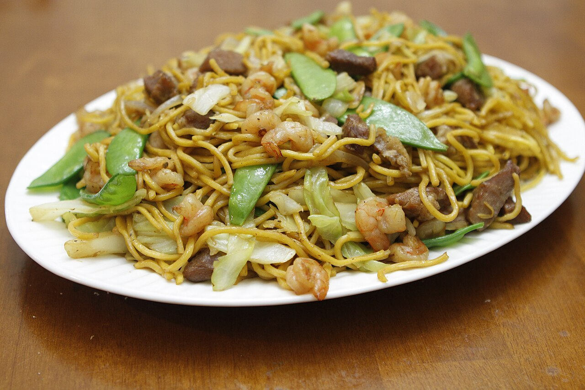

| Time |
Monday |
Tuesday |
Wednesday |
Thursday |
Friday |
Saturday |
Sunday |
| Breakfast |
Eggs |
Spam |
Eggs |
Eggs |
Bread |
Ham |
Beef |
| Lunch |
Soup |
Pancit |
Vegetable |
Rice |
Chicken |
Meat |
Soup |
| Dinner |
Soup |
Chicken |
Vegetable |
Rice |
Inasal |
Pork |
Fish |

Ingredients
- Dried Rice Noodles (Bihon): The base of the dish.
- Proteins: A combination of chicken, pork, Chinese sausage, and shrimp
- Aromatics: Minced garlic and chopped onions.
- Cabbage: Shredded.
- Carrots: Cut into matchsticks.
- Celery: Cut into matchsticks.
- Snap Peas: Trimmed for stir-frying.
- Chicken Broth: The primary cooking liquid for the noodles.
- Soy Sauce: For savory flavor and color.
- Oyster Sauce: For added umami and sweetness.
- Cooking Oil: For sautéing.
- Salt & Pepper: To adjust final seasoning.
- Green Onions: Sliced thin.
- Fried Garlic Bits: For crunch.
- Calamansi or Lemon Wedges: To be squeezed over the dish before eating.
Steps
- Soak the dried rice noodles in a bowl of warm water for about 5 minutes until they soften, then drain them completely.
- Slice your chicken, pork, or Chinese sausage into thin strips and prepare your shrimp by peeling and deveining them.
- Chop your vegetables by shredding the cabbage and cutting the carrots and celery into thin, matchstick-sized pieces.
- Heat oil in a large wok or pan over medium-high heat and sauté the minced garlic and chopped onions until they are fragrant and translucent.
- Add the meat to the pan and sear it until it is fully cooked and slightly browned on the edges.
- Toss in the carrots, celery, and snap peas, stir-frying them for a few minutes until they are tender yet still crisp.
- Pour in the chicken broth, soy sauce, and oyster sauce, then bring the entire mixture to a boil.
- Add the softened rice noodles into the boiling liquid and toss them continuously until they absorb all the flavorful broth.
- Mix the shredded cabbage and the cooked shrimp back into the pan, stirring for another minute until the cabbage wilts slightly.
- Season the dish with salt and pepper to taste before transferring it to a serving plate.
- Garnish the top with sliced green onions and fried garlic bits for extra flavor and crunch.
- Serve the dish immediately with fresh calamansi or lemon wedges to squeeze over the noodles right before eating.